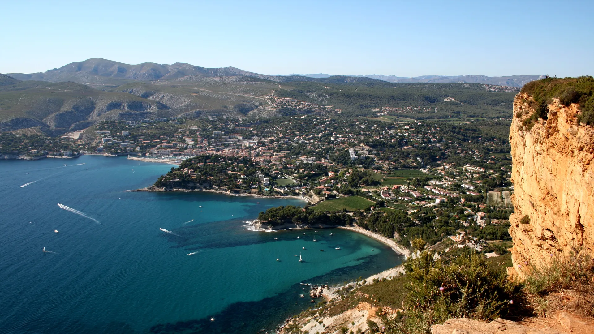

{kind=link}

Atelier des Lauves
폴 세잔이 생의 마지막 4년(1902–1906) 동안 매일 그림을 그렸던 언덕 위 아틀리에. 북향 채광창, 대형 캔버스용 벽 슬릿, 정물화에 등장했던 올리브 단지와 해골이 그대로 보존된 근대 미술의 성지.

마르세유 동쪽, 높이 394m로 프랑스에서 가장 높은 해안 절벽인 캅 카나유(Cap Canaille) 기슭에 안긴 아담하고 그림 같은 지중해 항구 마을이다.
대도시 마르세유의 거친 번잡함과 대조되는 고요하고 목가적인 리비에라 분위기를 지니고 있으며, 프로방스에서 드물게 미네랄이 풍부한 고급 화이트 와인(AOC Cassis)을 생산하는 유서 깊은 와인 산지다.
코발트빛 바다 위로 파스텔톤 어부 가옥들이 반사되는 구항구는 칼랑크 국립공원(Parc National des Calanques)의 비경을 둘러보는 유람선 투어의 가장 대표적인 출발 거점이다.
"마르세유의 대도시 일정 대신 석회암 절벽과 바다 풍경을 여유롭게 만끽하고 싶을 때 선택하는 최고의 대안 목적지다." 항구 선착장에서 3개 또는 5개 칼랑크를 둘러보는 45~65분 유람선을 탄 뒤, 항구 앞 테라스에서 시원한 카시스 화이트 와인과 갓 잡은 해산물 점심을 즐기는 반나절 코스로 이상적이다.
| 휴무 | 항구 자체의 휴무일 공식 고지 없음. 관광안내소(Quai des Moulins) 9월 운영일은 공식 페이지에서 확인 실패 — 재확인 필요 재확인 |
|---|---|
| 가는 법 | Gorguettes 셔틀은 9월 주말·방학·공휴일만 운행 — 평일 무효 |
| 항목 | 상세 정보 |
|---|---|
| 위치 | 13260 Cassis |
| 보트 투어 | 항구 매표소에서 현장 발권 (3개 칼랑크 약 45분 €19, 5개 칼랑크 약 65분 €24) / 기상 악화 시 결항 |
| 주차 (필수 주의) | 도심 진입 차량 전면 통제 — 마을 외곽 Parking Gorguettes(무료)에 주차 후 셔틀버스(€1.60) 이용 또는 유료 지하 Parking Viguerie / Parking Daudet 이용 |
| Aix 이동 | Aix-en-Provence에서 렌터카로 약 45~50분 (A50 및 D559) 소요 |
프로방스는 로제 와인이 압도적이지만, 카시스는 1936년 프랑스 최초의 AOC(원산지 통제 명칭) 중 하나로 지정된 화이트 와인의 명산지다. 석회암 토양과 바닷바람을 맞고 자란 클레레트(Clairette), 마르산(Marsanne) 품종으로 빚어 산뜻한 산미와 풍부한 미네랄, 은은한 허브 향이 지중해 생선 요리와 완벽한 마리아주를 이룬다.
항구 동쪽을 웅장하게 가로막고 있는 높이 394m의 붉은 사암 절벽으로, 바다에서 수직으로 솟아오른 유럽 최고 해벽 중 하나다.
폴 세잔이 생의 마지막 4년(1902–1906) 동안 매일 그림을 그렸던 언덕 위 아틀리에. 북향 채광창, 대형 캔버스용 벽 슬릿, 정물화에 등장했던 올리브 단지와 해골이 그대로 보존된 근대 미술의 성지.

폴 세잔이 20세부터 60세까지 40년간 머물며 화가로 성장했던 가문의 여름 저택. 살롱의 초기 벽화, 마로니에 가로수길, 분수 연못, 그리고 화가가 최초로 생트 빅투아르 산을 그렸던 역사적 현장.

마르세유와 카시스 사이에 걸쳐 20km에 걸쳐 펼쳐진 유럽 유일의 지중해 연안 국립공원. 에메랄드빛 바다로 수직 낙하하는 백색 석회암 피오르 협만들의 장관.
엑상프로방스 건축물의 황금빛 사암을 공급하던 고대·중세 채석장. 직각으로 깎인 붉은 사암 절벽과 소나무 숲 사이에서 세잔이 큐비즘의 기하학적 구도를 태동시켰던 야외 작업장.

1651년 옛 성벽 자리에 조성된 440m의 플라타너스 가로수길. 북쪽의 활기찬 카페와 남쪽의 고요한 17세기 귀족 저택, 4개의 유서 깊은 분수가 관통하는 엑상프로방스의 심장.

16세기 가죽 향장갑에서 출발해 500년 전통을 이어온 세계 향수 산업의 수도. 프라고나르(Fragonard) 유서 깊은 공장과 국제 향수 박물관이 자리한 프로방스 내륙 언덕 도시.